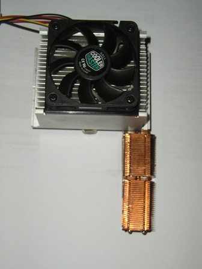
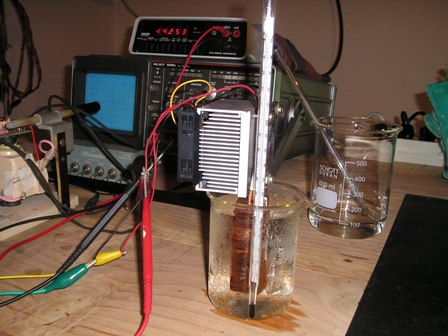

In mezzo a tanta chimica, ogni tanto ci vuole come diluente un po' di elettricità...
Prologo
Senza tanti giri di parole andiamo da Wiki e facciamo conoscenza con Monsieur Jean Charles Athanase Peltier (già uno che si chiama Atanasio mi è simpatico...): fisico francese [1785-1845], scopritore del fenomeno per cui una corrente elettrica che attraversa due giunzioni tra metalli diversi produce un trasferimento di calore. Il fenomeno è chiamato in suo onore Effetto Peltier, ed è l'esatto opposto dell'Effetto Seebeck .
In pratica, quando una corrente scorre in due giunzioni metalliche diverse (modernamente non metalliche ma semiconduttrici), una si riscalda e l'altra si raffredda; si ottine cioè come una specie di pompa che trasporta calore da una parte all'altra. Sembra semplice, ma non lo è! Per approfondire l'argomento, si trova nel Web di tutto e di più, basta cercare per es. Thermoelectric Effect e ce n'è per tutti i gusti.

Sperimentiamo il fenomeno
Ci serve una cella di Peltier, un bell'alimentatore in corrente continua da 12 V capace di almeno 5 Ampere e dei dissipatori termici in alluminio e rame, recuperati da ex schede di computer defunti per obsolescenza.
La cella di Peltier usata in questa esperienza è un un sottile wafer di materiale semiconduttore ricoperto da due strati di allumina ceramica (dimensioni 40x40 mm) e con due fili da collegare alla sorgente di elettricità.
Collegandola, si nota immediatamente che una faccia si riscalda moltissimo e quella opposta si raffredda... ma molto meno!
Infatti, mentre produrre il caldo è banalmente facile, produrre il freddo è assai più difficile e complicato, ma non voglio qui scomodare i fondamentali principi della termodinamica, che si troverebbero a disagio in un blog sperimentale come questo.
Per non bruciare subito la cella, occorre applicare alla faccia che si riscalda (è quella che assorbe tutta l'energia e che fa il lavoro pesante) un efficiente sistema di dissipazione del calore, in modo che il "delta T" tra le due facce si mantenga più basso possibile e che il rendimento di conversione, già basso, sia massimo.

Ho applicato alla faccia calda un grosso dissipatore alettato in alluminio munito di ventola; tra le superfici termiche a contatto è stato spalmato un sottile strato di grasso al silicone termoconduttivo, per avere la massima efficienza di scambio termico.
Idem sulla faccia fredda, alla quale ho arrangiato meccanicamente un dissipatore in rame (prelevato da una ex scheda grafica) con una forma adatta ad essere immerso in acqua per vedere l'effetto raffreddante.
- la foto 1 mostra parzialmente l'assemblaggio; la cella non si vede perchè è in mezzo tra i due radiatori, quello con la ventola (lato caldo) e quello con il radiatorino in rame (lato freddo).

- la foto 2 mostra le condizioni di test, con il radiatore lato freddo immerso in un becker con acqua inizialmente a 20 gradi, alimentazione a 13 V e 4 A

- la foto 3 mostra l'effetto dopo una mezz'oretta:
il becker "suda" bello fresco (eravamo in estate!) e l'acqua è andata ad 8 gradi e sta ancora scendendo, basta aspettare!
Facile fare il freddo, allora? Basta una Peltier? Facile forse sì, ma a prezzo di un enorme dispendio di energia, dato che il rendimento di queste celle è solo circa il 5%; il resto della corrente assorbita va a finire in inutile calore, da asportare con radiatore e ventola!
Però, collegare un aggeggio alla corrente e sentire che da una parte si raffredda fino a ghiacciarsi, ha un grande fascino, ed è da questa considerazione "termodinamica" che è nata questa estemporanea esperienza.